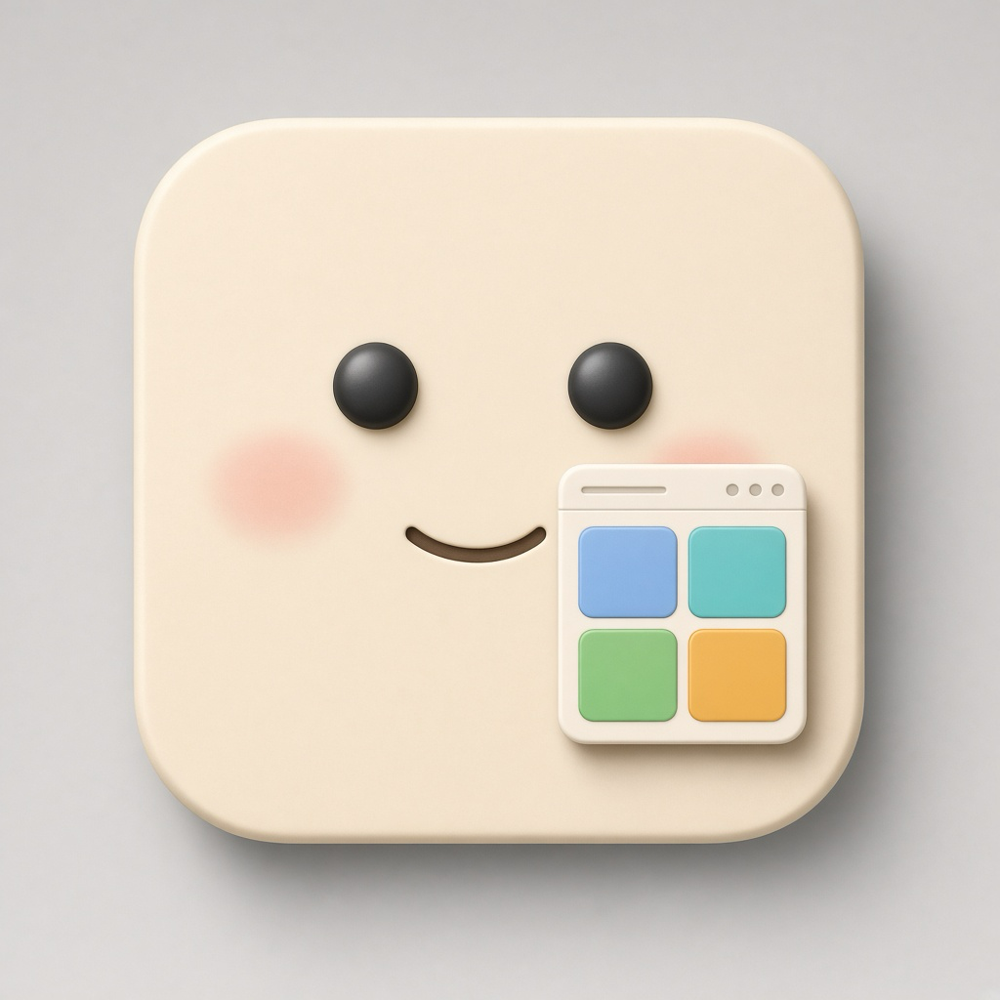

Made for the Mac
Show Bar runs on macOS. It stays in the menu bar and on the Dock. The Mac stays a Mac. The missing Windows habits are what it adds.
For macOS
Show Bar is a macOS app. It brings Windows capabilities to the Mac: hover a Dock icon and see that app’s windows, switch windows with Command-Tab, snap a window to the screen, and keep what you copy.
Version 1.2. Open the disk image and drag Show Bar into Applications. macOS 14 or later. Not on the Mac App Store. This build opens on the Mac it was signed on.

macOS app by Naor Yanko · na0ryank0@gmail.com
Show Bar runs on macOS. It stays in the menu bar and on the Dock. The Mac stays a Mac. The missing Windows habits are what it adds.
Hover a Dock icon and that app’s windows appear, the way the Windows taskbar does. Click a window to switch. X closes only that window.
Command-Tab shows the windows. Snap a window to a half or a corner. Clipboard history keeps text, links, and screenshots.